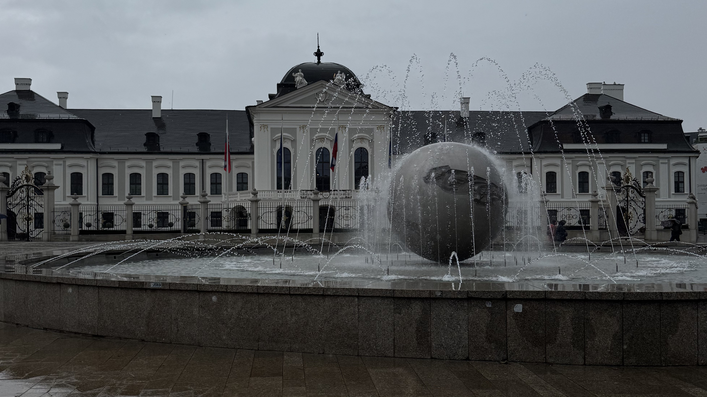
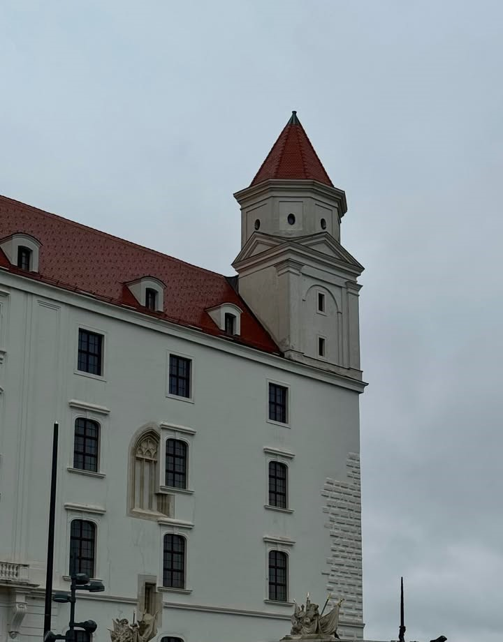
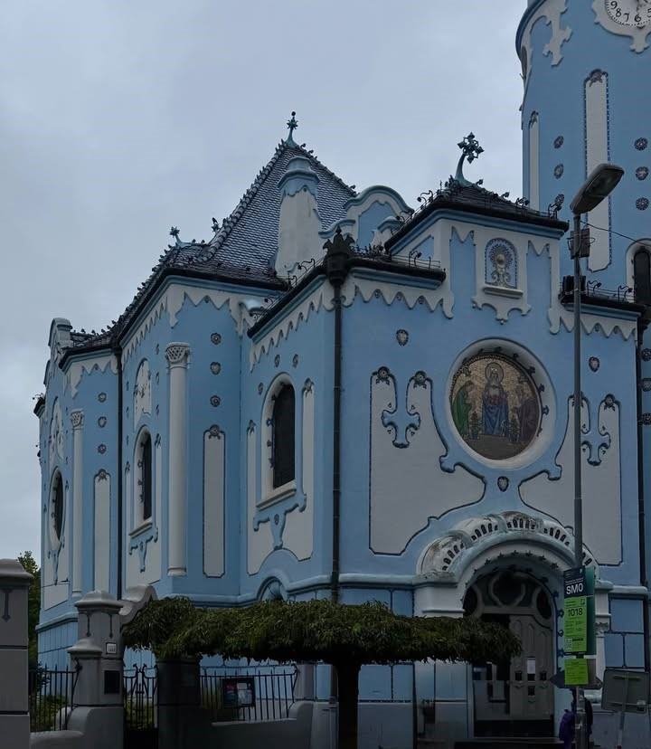
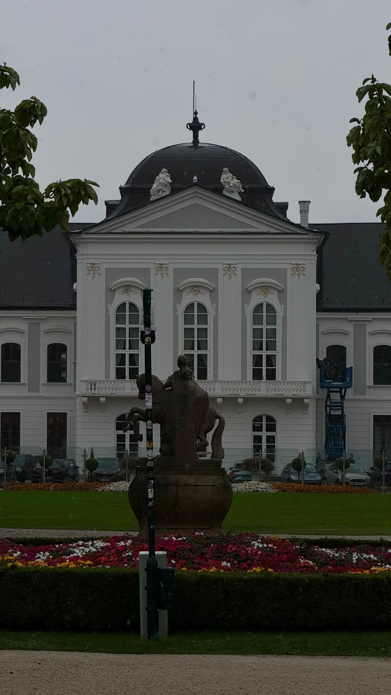

Slovacchia: La capitale Bratislava
Un viaggio di 3 giorni nella capitale Bratislava
Panoramica dell'Itinerario
Questo itinerario ti guiderà alla scoperta dei luoghi più iconici di Bratislava, dal Castello e dalla Cattedrale di San Martino fino alla Chiesa Blu e alle pittoresche piazze del centro storico. Passeggerai lungo il Danubio, incontrerai statue e monumenti curiosi come Čumil e Napoleone, e visiterai il Palazzo Presidenziale e il memoriale di Slavín.
Itinerario Giorno per Giorno
Arrivo a Bratislava

Attività:
- Mattina/Pomeriggio: Arrivo a Bratislava e trasferimento verso il centro città. Personalmente sono arrivato a Bratislava passando da Vienna, dato che l'aeroporto della capitale austriaca è molto più collegato con l'Italia. Da Vienna è possibile raggiungere Bratislava facilmente con autobus o treni in circa un'ora. Dopo l'arrivo puoi fare il check-in nel tuo hotel o appartamento nel centro storico, che è la zona migliore dove alloggiare per visitare la città. Bratislava è una capitale piuttosto piccola rispetto ad altre città europee e il centro si gira tranquillamente a piedi senza bisogno di utilizzare mezzi pubblici. Dopo esserti sistemato in hotel puoi iniziare con una prima passeggiata esplorativa tra le vie del centro storico, osservando le piazze, i palazzi storici e le statue curiose che rendono la città molto caratteristica.
- Sera: La sera puoi continuare la passeggiata nel centro storico e fermarti in uno dei ristoranti tradizionali slovacchi. Molti locali hanno l'aspetto di piccole taverne tipiche con tavoli in legno e decorazioni tradizionali. Qui puoi provare alcuni dei piatti più famosi della cucina slovacca come i bryndzové halušky, piccoli gnocchi di patate con formaggio di pecora e pancetta, oppure la kapustnica, una zuppa di crauti molto diffusa nella cucina locale. La cucina slovacca ha sapori abbastanza particolari ma non è generalmente molto speziata. Alcuni piatti possono sembrare insoliti per chi non è abituato, ma vale comunque la pena provarli per scoprire la tradizione gastronomica locale.
Tour dei monumenti di Bratislava

Attività:
- Mattina: Inizia la giornata visitando la Cattedrale di San Martino, uno degli edifici religiosi più importanti della città e luogo storico dove venivano incoronati i re del Regno d'Ungheria. Da qui puoi proseguire verso il Castello di Bratislava, situato su una collina che domina il centro città e il fiume Danubio. Il castello è uno dei simboli più riconoscibili della capitale slovacca. Anche senza entrare nel museo interno vale la pena salire fino alla zona del castello per fare una passeggiata nei cortili e nei giardini e godere di una bellissima vista panoramica sulla città e sul fiume.
- Pomeriggio: Nel pomeriggio puoi scendere nuovamente verso il centro storico passando per alcune delle piazze più caratteristiche della città e dalla porta di San Michele. Passeggiando lungo il Danubio potrai vedere anche il famoso ponte con la piattaforma panoramica UFO. All'interno della torre si trova un punto panoramico visitabile e anche un ristorante da cui è possibile osservare Bratislava dall'alto. Continuando la visita puoi raggiungere la famosa Chiesa Blu, uno degli edifici più fotografati della città grazie al suo particolare colore azzurro e allo stile architettonico molto originale. L'interno della chiesa è visitabile e mantiene lo stesso stile decorativo dell'esterno.
- Sera: In serata puoi continuare a esplorare il centro storico passando per alcune delle piazze principali come Hlavné námestie e Hviezdoslavovo námestie. Durante la passeggiata incontrerai anche alcune statue molto famose della città, tra cui la statua di Napoleone e la statua di Čumil, conosciuta anche come “l'uomo nel tombino”, una delle sculture più fotografate di Bratislava. Il centro storico non è molto grande ma è ricco di scorci interessanti, caffè e piccoli ristoranti dove fermarsi per bere qualcosa o cenare.
Palazzi e memoriali di Bratislava

Attività:
- Mattina: L'ultimo giorno puoi visitare il Palazzo Grassalkovich, che oggi ospita la residenza ufficiale del Presidente della Slovacchia. Davanti al palazzo si trova un grande giardino pubblico dove è possibile fare una passeggiata tranquilla tra alberi e aiuole curate. Questa zona è molto piacevole soprattutto nelle giornate di bel tempo ed è frequentata sia dai turisti sia dagli abitanti della città.
- Pomeriggio: Nel pomeriggio puoi salire fino al Memoriale di Slavín, uno dei monumenti più importanti della città dedicato ai soldati sovietici caduti durante la Seconda Guerra Mondiale. Il memoriale si trova su una collina e offre una bella vista panoramica su Bratislava. Da qui è possibile osservare gran parte della città e del Danubio, rendendo questo luogo una tappa interessante anche per chi vuole scattare qualche fotografia panoramica.
- Sera: In base all'orario di partenza puoi fare un'ultima passeggiata nel centro storico oppure lungo il Danubio prima di lasciare la città. Bratislava è una capitale piccola ma molto piacevole da visitare in pochi giorni, con un centro storico elegante, diverse attrazioni interessanti e un'atmosfera generalmente tranquilla rispetto ad altre capitali europee. Dopo il trasferimento verso la stazione o verso Vienna termina così il viaggio nella capitale slovacca.
Riepilogo Costi Stimati
*Costi esclusi: voli, assicurazione viaggio, spese personali
Consigli Pratici
Quando Andare
Da maggio a settembre il clima è più piacevole, ma porta sempre un ombrello: a Bratislava può piovere all'improvviso.
Come Muoversi
Il centro storico si visita tranquillamente a piedi. Per raggiungere l'aeroporto, usa taxi o Bolt: il costo è di circa €10-15 a tratta.
Dove Alloggiare
Alloggia tranquillamente in centro, così da avere le principali attrazioni a portata di mano e prezzi bassi.
Cosa Assaggiare
Prova piatti tipici slovacchi come bryndzové halušky (gnocchi di patate con formaggio di pecora), kapustnica (zuppa di crauti e carne), klobása (salsiccia locale) e dolci come trdelník (dolce arrotolato allo zucchero e cannella).
Arrivo via Vienna
Se atterri a Vienna, puoi raggiungere Bratislava facilmente con i bus locali dall'aeroporto. Il costo è di circa €5-10 a tratta, rendendo il trasferimento economico e comodo.